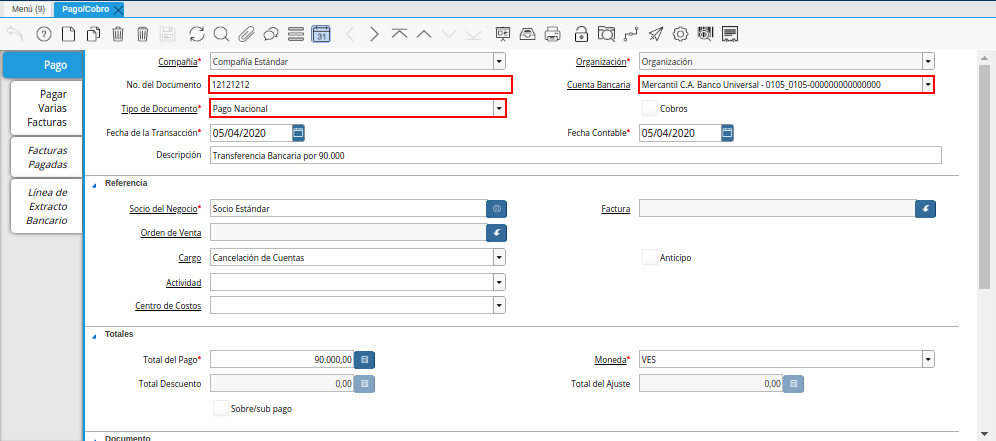
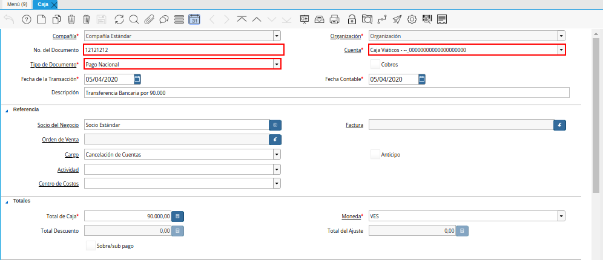
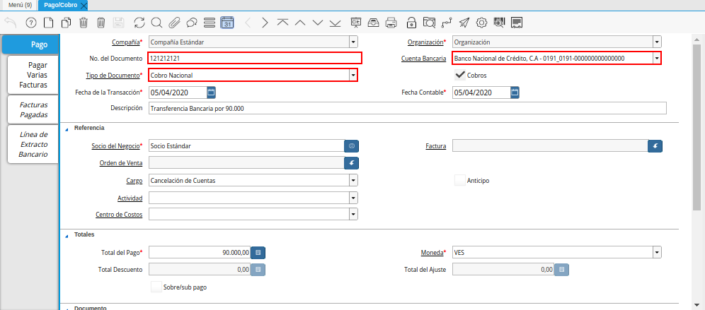
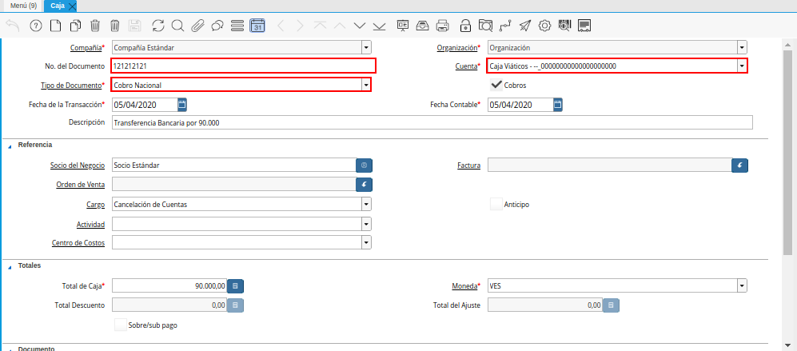

Registro de Transferencia Bancaria
Para realizar una transferencia bancaria en ADempiere deben seguir los siguientes pasos:
Ubique yseleccione en el menú de ADempiere, la carpeta “Gestión de Saldos Pendientes”, luego seleccione el proceso “Transferencia Bancaria”.
Imagen 1. Menú de ADempiere

Podrá visualizar la ventana del proceso “Transferencia Bancaria” y proceder al llenado de los campos correspondientes.
Imagen 2. Ventana Transferencia Bancaria

Seleccione en el campo “Cuenta bancaria desde”, la cuenta a debitar el monto de la transferencia realizada.
Imagen 3. Campo Cuenta Bancaria Desde
Note
La cuenta a debitar desde es la cuenta bancaria de donde saldrá la transferencia.

Seleccione en el campo “Cuenta Bancaria a Transferir”, la cuenta a acreditar el monto de la transferencia realizada.
Imagen 4. Campo Cuenta Bancaria a Transferir
Note
La cuenta bancaria a transferir, es la cuenta en donde caerá la transferencia.

Seleccione en el campo “Socio del Negocio”, el socio del negocio titular de la cuenta seleccionada.
Imagen 5. Campo Socio del Negocio

Seleccione en el campo “Moneda”, la moneda en la cual fue realizada la transferencia.
Imagen 6. Campo Moneda

Seleccione en el campo “Cargo”, el cargo correspondiente a la transferencia entre cuentas que se está realizando.
Imagen 7. Campo Cargo
Note
El cargo a colocar en la transferencia bancaria depenrá de que tipo de transferencia se este realizando.

Introduzca en el campo “No. del Documento”, la referencia correspondiente a la transferencia bancaria realizada.
Imagen 8. Campo No. del Documento
Note
El número de documento a colocar en este campo es el número de la transferencia bancaria realizada del banco colocado en el campo “Cuenta bancaria desde”.

Introduzca en el campo “Documento Destino”, la referencia correspondiente a la transferencia bancaria realizada.
Imagen 9. Campo Documento Destino
Note
El número de documento a colocar en este campo es el número de la transferencia bancaria realizada al banco seleccionado en el campo “Cuenta Bancaria a Transferir” (banco destino),el llenado de este campo aplicaría para aquellas transacciones de intercompañía el cual el personal que esté realizado el procedimiento conozca el número de transferencia en ambas cuentas bancarias (Banco a emisor/banco destino), si se desconoce el número de transferencia simplemente no se coloca, este campo no es un campo obligatorio por ello se puede obviar el llenado de este campo.

Introduzca en el campo “Monto”, el monto total de la transferencia bancaria realizada.
Imagen 10. Campo Monto

Introduzca en el campo “Descripción”, una breve descripción referente a la transferencia entre cuentas que está realizando.
Imagen 11. Campo Descripción

Introduzca en el campo “Fecha de Estado de Cuenta”, la fecha de la transferencia bancaria realizada.
Imagen 12. Campo Fecha de Estado de Cuenta

Introduzca en el campo “Fecha Contable”, la fecha de la transferencia bancaria realizada.
Imagen 13. Campo Fecha Contable

Si desea que los pagos/cobros que se generen de esta transferencia bancarias se concilien de una vez puede tildar la opción “Conciliar Automáticamente”, si no tilda esta opción los pagos/cobros no se conciliaran y deberán ser conciliados a través Registro de Conciliación Automática
Imagen 14. Campo Conciliar Automáticamente

Seleccione la opción “OK”, para generar en ADempiere la transferencia entre cuentas bancarias.
Imagen 15. Opción OK

Podrá apreciar el resultado del proceso de la siguiente manera.
Imagen 16. Resultado de Transferencia

Note
Al realizar el proceso de transferencia bancaria, es generado un egreso en la cuenta seleccionada en el campo “Cuenta bancaria desde” y un ingreso en la cuenta seleccionada en el campo “Cuenta Bancaria a Transferir”.
De igual manera, cuando se está trabajando las transferencias bancarias con cajas es creado un documento de cobro en la ventana “Caja” reflejando el ingreso a la cuenta seleccionada en el campo “Cuenta Bancaria a Transferir” y un pago en la ventana “Pago/Cobro” reflejando el egreso de la cuenta seleccionada en el campo “Cuenta bancaria desde”.
Consultar Egreso Generado de la Transferencia Bancaria
Si en la transferencia bancaria en el campo “Cuenta Bancaria Desde” fue seleccionada una cuenta bancaria el pago caerá en la ventana “Pago/Cobro” y tendrá como número de documento el número colocado en el campo “No. del Documento” de la transacción bancaria.

Imagen 17. Pago en Ventana Pago/Cobro
Si en la transferencia bancaria en el campo “Cuenta Bancaria Desde” fue seleccionada una cuenta de caja el pago caerá en la ventana “Caja” y tendrá como número de documento el número colocado en el campo “No. del Documento” de la transacción bancaria.

Imagen 18. Pago en Ventana Caja
Consultar Ingreso Generado de la transferencia Bancaria
Si en la transferencia bancaria en el campo “Cuenta Bancaria a Transferir” fue seleccionada una cuenta bancaria el cobro caerá en la ventana “Pago/Cobro”, si en el campo “Documento Destino” de la transferencia bancaria se colocó el número de la transacción este mismo debe aparecer como el número de documento del campo “No. del Documento” en la ventana “Pago/Cobro”.

Imagen 19. Cobro en Ventana Pago/Cobro
Note
Si en el campo “Documento Destino” de la transferencia bancaria no se colocó el número de la transacción, el número de documento a mostrar del cobro en la ventana “Pago/Cobro” será el mismo que se número colocado en el campo “No. del Documento” de la transferencia bancaria.
Si en la transferencia bancaria en el campo “Cuenta Bancaria a Transferir” fue seleccionada una cuenta de caja el cobro caerá en la ventana “Caja”, si en el campo “Documento Destino” de la transferencia bancaria se colocó el número de la transacción este mismo debe aparecer como el número de documento del campo “No. del Documento” en la ventana “Caja”.

Imagen 20. Cobro en Ventana Caja
Note
Si en el campo “Documento Destino” de la transferencia bancaria no se colocó el número de la transacción, el número de documento a mostrar del cobro en la ventana “Caja” será el mismo que se número colocado en el campo “No. del Documento” de la transferencia bancaria.